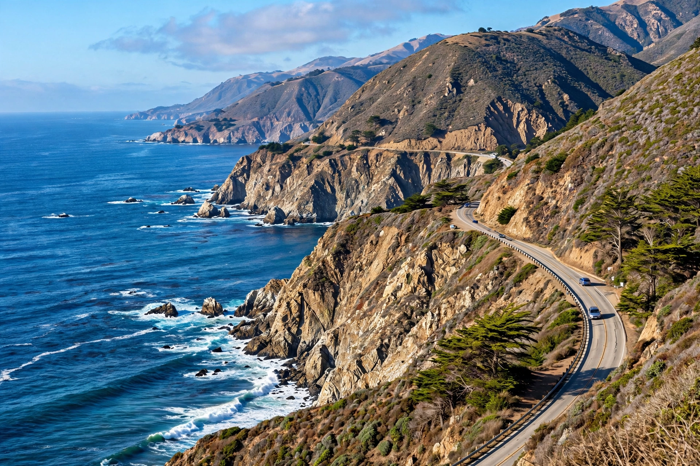

Monterey County, California
| Monterey County, California | |
|---|---|
| County seat | Salinas |
| Largest city | Salinas |
| Area (total) | 3,771 sq mi (9,770 km²), of which land 3,281 sq mi |
| Population (2020) | 439,035 |
| Named for | Monterey Bay, named for the Count of Monte Rey, viceroy of New Spain |
| Created | 1850 (one of the original California counties) |

Monterey County, officially the County of Monterey, is a county located on the Pacific coast of California, south of the San Francisco Bay Area and north of the Central Coast. As of the 2020 census its population was 439,035. The county seat and largest city is Salinas. The county takes its name from Monterey Bay, which was named by Sebastián Vizcaíno in 1602 in honor of Gaspar de Zúñiga, 5th Count of Monterrey and viceroy of New Spain.
Geography and economy
The county includes the southern shore of Monterey Bay, the Monterey Peninsula with the cities of Monterey, Carmel-by-the-Sea and Pacific Grove, the rugged Big Sur coast along the Santa Lucia Range, and the fertile Salinas Valley inland — one of the most productive agricultural regions in the United States, nicknamed "the Salad Bowl of the World" for its lettuce, strawberries, broccoli and wine grapes. Tourism is the second great pillar of the economy, drawing visitors to the Monterey Bay Aquarium, Cannery Row, the Pebble Beach golf courses, and the scenic coastline. The county is also home to the Defense Language Institute and the Naval Postgraduate School in Monterey, the California State University, Monterey Bay campus at the former Fort Ord, Laguna Seca Raceway, and Pinnacles National Park, which lies partly within its eastern border.
History
The region was inhabited by the Ohlone (Rumsen) and Esselen peoples before Spanish colonisation. Monterey, founded in 1770 alongside the mission of San Carlos Borromeo de Carmelo by Junípero Serra and Governor Gaspar de Portolá, was the capital of Alta California under both Spain and Mexico. The sardine canneries of Cannery Row boomed in the first half of the twentieth century before the fishery collapsed; John Steinbeck, who was born in Salinas, immortalised the valley and the waterfront in novels including East of Eden, Of Mice and Men and Cannery Row.
Cities
Incorporated cities include Carmel-by-the-Sea, Del Rey Oaks, Gonzales, Greenfield, King City, Marina, Monterey, Pacific Grove, Salinas, Sand City, Seaside and Soledad.
See also
Monterey Peninsula · Salinas, California · Big Sur · Monterey Bay